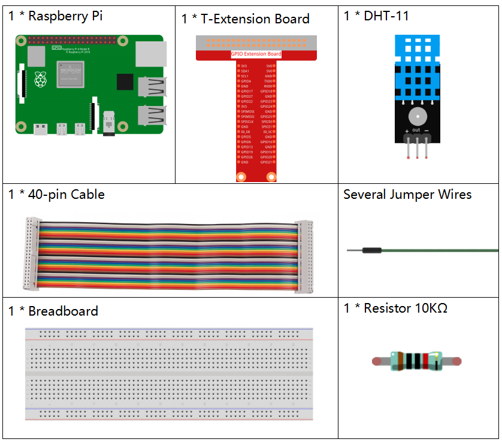
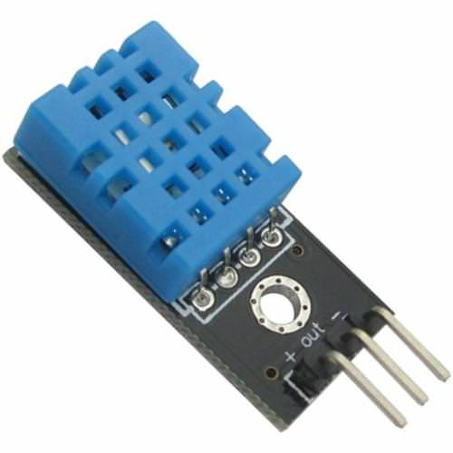
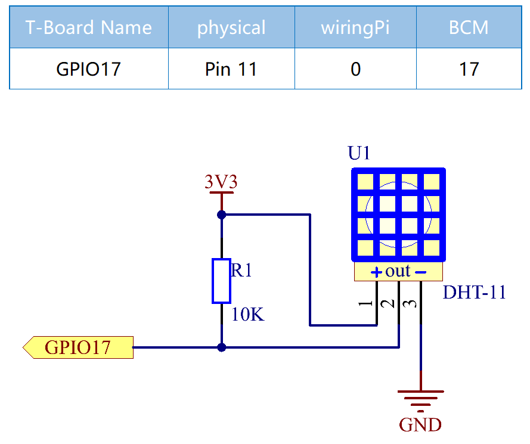
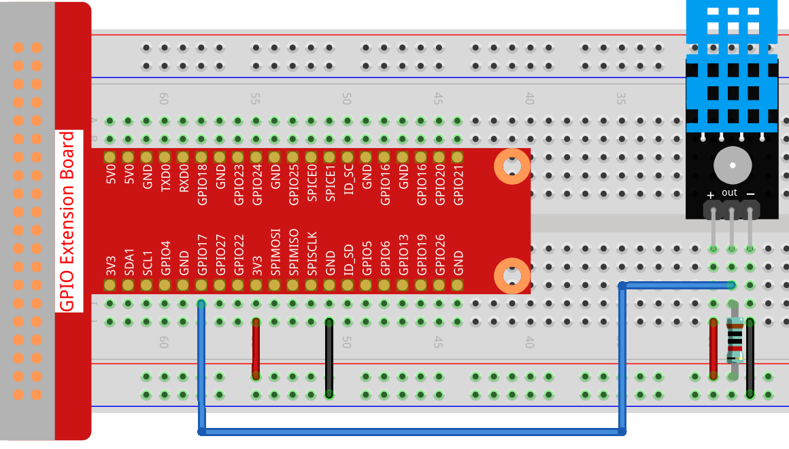

Nota
Ciao e benvenuto nella Community di appassionati di SunFounder Raspberry Pi, Arduino e ESP32 su Facebook! Approfondisci le tue conoscenze su Raspberry Pi, Arduino e ESP32 insieme ad altri appassionati.
Perché unirsi a noi?
Supporto esperto: Risolvi problemi post-vendita e sfide tecniche grazie all’aiuto della nostra community e del nostro team.
Impara e Condividi: Scambia consigli e tutorial per migliorare le tue competenze.
Anteprime esclusive: Accedi in anteprima agli annunci sui nuovi prodotti.
Sconti speciali: Godi di sconti esclusivi sui nostri prodotti più recenti.
Promozioni festive e omaggi: Partecipa a promozioni festive e concorsi.
👉 Pronto a esplorare e creare con noi? Clicca su [Qui] e unisciti oggi stesso!
2.2.3 DHT-11
Introduzione
Il sensore digitale di temperatura e umidità DHT11 è un sensore composito che fornisce un’uscita digitale calibrata della temperatura e dell’umidità. Grazie alla tecnologia dei moduli digitali dedicati e a quella del rilevamento di temperatura e umidità, il prodotto offre alta affidabilità e ottima stabilità.
I sensori includono un elemento umido sensibile e un sensore di temperatura NTC, collegati a un microcontrollore a 8 bit ad alte prestazioni.
Componenti
Principio di funzionamento
Il DHT11 è un sensore digitale di temperatura e umidità a basso costo. Utilizza un sensore capacitivo di umidità e un termistore per misurare l’aria circostante e fornisce un segnale digitale sul pin dei dati (non sono necessari pin di ingresso analogico).
{kind=link}
Sono disponibili solo tre pin: VCC, GND e DATA. Il processo di comunicazione inizia con l’invio dei segnali di avvio sulla linea DATA al DHT11; il DHT11 riceve i segnali e invia un segnale di risposta. Il dispositivo riceve il segnale di risposta e inizia a ricevere 40 bit di dati (8 bit per l’umidità intera + 8 bit per l’umidità decimale + 8 bit per la temperatura intera + 8 bit per la temperatura decimale + 8 bit di checksum). Per maggiori informazioni, fare riferimento al datasheet del DHT11.
Schema elettrico
Procedure sperimentali
Passo 1: Costruisci il circuito.
{kind=link}
Passo 2: Accedi alla cartella del codice.
cd ~/davinci-kit-for-raspberry-pi/c/2.2.3/
Passo 3: Compila il codice.
gcc 2.2.3_DHT.c -lwiringPi
Passo 4: Esegui il file eseguibile.
sudo ./a.out
Dopo aver avviato il codice, il programma stamperà sullo schermo del computer la temperatura e l’umidità rilevate dal DHT11.
Nota
Se il programma non funziona dopo l’esecuzione o compare un messaggio di errore: "wiringPi.h: No such file or directory», fai riferimento a Il codice C non funziona?.
Codice
#include <wiringPi.h>
#include <stdio.h>
#include <stdlib.h>
#include <stdint.h>
#define MAXTIMINGS 85 // Maximum number of timing transitions
int dht11_dat[5] = {0, 0, 0, 0, 0}; // Data array to hold sensor values
// Function to read data from DHT11 sensor
void read_dht11_dat(int GPIOPIN)
{
uint8_t currState;
uint8_t laststate = HIGH;
uint8_t counter = 0;
uint8_t j = 0;
uint8_t i;
float f; // Temperature in Fahrenheit
// Reset data array before each read
dht11_dat[0] = dht11_dat[1] = dht11_dat[2] = dht11_dat[3] = dht11_dat[4] = 0;
// Pull pin down for 18 milliseconds to initiate communication
pinMode(GPIOPIN, OUTPUT);
digitalWrite(GPIOPIN, LOW);
delay(18);
// Then pull it up for 40 microseconds
digitalWrite(GPIOPIN, HIGH);
delayMicroseconds(40);
// Prepare to read the pin
pinMode(GPIOPIN, INPUT);
// Detect change and read data
for (i = 0; i < MAXTIMINGS; i++)
{
counter = 0;
// Count how long each state lasts
while (digitalRead(GPIOPIN) == laststate)
{
counter++;
delayMicroseconds(2);
if (counter == 255)
{
break;
}
}
// Save the current state
laststate = digitalRead(GPIOPIN);
if (counter == 255) break;
// Ignore first 3 transitions (DHT11 response signal)
if ((i >= 4) && (i % 2 == 0))
{
// Shift bits and store data
dht11_dat[j/8] <<= 1;
if (counter > 16)
{
dht11_dat[j/8] |= 1;
}
j++;
}
}
// Check if we received 40 bits (5 bytes) and verify checksum
if ((j >= 40) && (dht11_dat[4] == ((dht11_dat[0] + dht11_dat[1] + dht11_dat[2] + dht11_dat[3]) & 0xFF)) )
{
// Convert temperature to Fahrenheit
f = dht11_dat[2] * 9.0 / 5.0 + 32;
printf("Humidity = %d.%d %% Temperature = %d.%d °C (%.1f °F)\n",
dht11_dat[0], dht11_dat[1], dht11_dat[2], dht11_dat[3], f);
}
else
{
printf("Data not good, skip\n");
}
}
int main (void)
{
printf("Raspberry Pi wiringPi DHT11 Temperature test program\n");
// Initialize wiringPi using BCM GPIO pin numbering
if (wiringPiSetupGpio() == -1)
{
exit(1);
}
while(1)
{
// Read data from DHT11 connected to GPIO pin 17
read_dht11_dat(17);
delay(1000); // Wait 1 second before next read
}
return 0;
}
Spiegazione del Codice
Includere Intestazioni: Il codice include le intestazioni necessarie per le funzioni wiringPi e input/output standard.
#include <wiringPi.h> #include <stdio.h> #include <stdlib.h> #include <stdint.h>
Definire Costanti:
MAXTIMINGS: Il numero massimo di transizioni di temporizzazione attese dal sensore DHT11 (85).
#define MAXTIMINGS 85 // Numero massimo di transizioni di temporizzazione
Array Globale di Dati:
dht11_dat[5]: Un array per contenere i 5 byte di dati ricevuti dal sensore DHT11.
int dht11_dat[5] = {0, 0, 0, 0, 0}; // Array per contenere i valori del sensore
Funzione
read_dht11_dat(int GPIOPIN): Legge i dati dal sensore DHT11 collegato al pin GPIO specificato.Inizializzazione: Reimposta l’array
dht11_data zero prima di ogni lettura.dht11_dat[0] = dht11_dat[1] = dht11_dat[2] = dht11_dat[3] = dht11_dat[4] = 0;
Segnale di Avvio: Imposta il pin GPIO a livello basso per almeno 18 millisecondi per segnalare al DHT11 di iniziare a inviare dati.
pinMode(GPIOPIN, OUTPUT); digitalWrite(GPIOPIN, LOW); delay(18); // 18 millisecondi
Imposta il pin GPIO a livello alto per 40 microsecondi.
digitalWrite(GPIOPIN, HIGH); delayMicroseconds(40); // 40 microsecondi
Imposta il pin GPIO in modalità input per leggere i dati dal sensore.
pinMode(GPIOPIN, INPUT);
Ciclo di Lettura dei Dati: Il ciclo viene eseguito fino a
MAXTIMINGSvolte per leggere i bit dei dati.Ad ogni transizione (da alto a basso o da basso ad alto), misura per quanto tempo il pin rimane in ciascuno stato.
for (i = 0; i < MAXTIMINGS; i++) { counter = 0; while (digitalRead(GPIOPIN) == laststate) { counter++; delayMicroseconds(2); if (counter == 255) { break; } } laststate = digitalRead(GPIOPIN); // ... resto del ciclo }
Estrazione dei Bit di Dati: Le prime 3 transizioni vengono ignorate in quanto fanno parte della risposta iniziale del DHT11.
Per ogni bit di dati, determina se il bit è 0 o 1 in base alla durata di permanenza del pin in stato alto.
if ((i >= 4) && (i % 2 == 0)) { dht11_dat[j/8] <<= 1; if (counter > 16) { dht11_dat[j/8] |= 1; } j++; }
Verifica del Checksum: Dopo aver ricevuto tutti i bit, il codice verifica il checksum per garantire l’integrità dei dati.
if ((j >= 40) && (dht11_dat[4] == ((dht11_dat[0] + dht11_dat[1] + dht11_dat[2] + dht11_dat[3]) & 0xFF)) )
Se il checksum è corretto, stampa i valori di umidità e temperatura.
f = dht11_dat[2] * 9.0 / 5.0 + 32; printf("Umidità = %d.%d %% Temperatura = %d.%d °C (%.1f °F)\n", dht11_dat[0], dht11_dat[1], dht11_dat[2], dht11_dat[3], f);
Se il checksum non è corretto, stampa un messaggio di errore.
else { printf("Dati non validi, salto\n"); }
Funzione Principale:
Stampa un messaggio di avvio.
printf("Programma di test temperatura DHT11 per Raspberry Pi con wiringPi\n");
Inizializza wiringPi utilizzando la numerazione dei pin GPIO BCM.
if (wiringPiSetupGpio() == -1) { exit(1); }
Entra in un ciclo infinito per leggere i dati dal sensore DHT11 ogni secondo.
while(1) { read_dht11_dat(17); delay(1000); // attende 1 secondo }